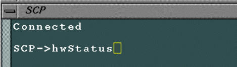

Operating Documentation
Direction 5440000, Rev# 5
Signa HDxt Service Methods
Module Version 1.0, Version Date 4/27/07
Operating Documentation |
This material covers checking the status of the MDS Link devices, including the use of the hwStatus command. On occasion, it is helpful to know the status of the MDS Link peripheral devices. The Serial Peripheral Interface (SPI), which is located on the Scan Control Processor (SCP) Board, reports the status of each peripheral device on the MDS Link.
Sometimes, when there is a fault on the MDS Link, the LEDs on the hardware peripheral devices do not match the state reported by SPI. This is when the hwStatus command is useful. It can check the SPI view of the state of the hardware. For example, if the scanner will not go to Ready, and it is not obvious what is causing the problem, the command can help you locate the cause of the problem.
It is most helpful to use the error log in conjunction with the hwStatus command. Section 1 describes how to execute this command.
| NOTE: | The hwStatus command cannot be used to change the state or status of any piece of hardware on the MDS Link. It is used only for reporting what the SPI thinks the state of the MDS peripheral devices are. |
Click the (Service Tools) icon to open the Service Desktop Manager.
Click in the lower part of the Service Desktop Manager if the Common Service Desktop is not already visible.
| NOTE: | It takes a few seconds for the Common Service Desktop to appear. If the Common Service Desktop never appears, then confirm that it isn’t already open and that it hasn’t been dragged partially off the screen or that it isn’t hidden behind another open window. |
Click the (Utilities) icon at the top of the Common Service Desktop.
Select [Log Into APS/AGP/SCP] from the menu on the left side of the screen.
Under Log Into APS/AGP/SCP window on the right side of the screen, select <Click here to start this tool>. The SCP window opens in front of the APS and AGP windows.
Place the cursor inside the SCP window and press <Enter> once so that a prompt displays inside the window.
Type <hwStatus><Enter> in the SCP window as shown in Illustration 1.
Illustration 1: Type hwStatus Command in SCP Window

Many lines of information like those shown in Table 1 will be listed in the SCP window. Use the scroll bar on the side of the window to view all the information.
Table 1: hwStatus Command Output
Hardware Status: |
ReadyToScan objects: 20 |
Global Ready To Scan State: *** NOT READY *** |
IRF: NOT READY: 0x224fb5 |
PDU: Ready |
RF Door: Ready |
Gradient Coil Temp: Ready |
Sys Cabinet Temp: Ready |
DCB Driver: Ready |
DCB Multi-Coil: Ready |
MDS Link: Ready |
Gradient Driver: Ready |
RfNb: Ready |
RfBb: Ready |
Tr Driver: Ready |
Multi-Coil: Ready |
Power Monitor: Ready |
SRI Link: Ready |
Scan Plane: Ready |
Bore Temp: Ready |
WIM Link: Ready |
Autopause: Ready |
TNS: Ready |
GradientProxy State: |
requestedState.xAxis = GRAD_STANDBY_STATE |
.yAxis = GRAD_STANDBY_STATE |
.zAxis = GRAD_STANDBY_STATE |
state.xAxis = GRAD_STANDBY_STATE |
.yAxis = GRAD_STANDBY_STATE |
.zAxis = GRAD_STANDBY_STATE |
scanState = GRAD_NOT_SCANNING_STATE |
PmProxy State: |
status = PM_STATUS_OK |
requestedControl.headAm = 0 |
.headPw = 0 |
.headDc = 0 |
.bodyAm = 0xff |
.bodyPw = 0x12 |
.bodyDc = 0xd9 |
.specAm = 0 |
.specPw = 0 |
.specDc = 0 |
requestedState = PM_STATE_OFF |
RfNbProxy State: |
select = RF_NB_SELECT_AMP |
requestedState = RF_NB_STANDBY_STATE |
state = RF_NB_STANDBY_STATE |
requestedMode = RF_NB_BODY_MODE |
mode = RF_NB_BODY_MODE |
TrProxy State: |
requestedRcvCoil = TR_COIL_BODY |
rcvCoil = TR_COIL_BODY |
requestedXmtCoil = TR_COIL_BODY |
xmtCoil = TR_COIL_BODY |
requestedMcPortEnable = 0 |
mcPortEnable = 0 |
requestedMcErrorDisable = 0xf |
mcErrorDisable = 0xf |
TrProxy State: |
requestedRcvCoil = TR_COIL_BODY |
rcvCoil = TR_COIL_BODY |
requestedXmtCoil = TR_COIL_BODY |
xmtCoil = TR_COIL_BODY |
requestedMcPortEnable = 0 |
mcPortEnable = 0 |
requestedChSelect = 0 |
mcChSel = 0 |
openCkt0 = 0 |
openCkt1 = 0 |
openCkt2 = 0 |
openCkt3 = 0 |
shortCkt0 = 0 |
shortCkt1 = 0 |
shortCkt2 = 0 |
shortCkt3 = 0 |
voltCfg0 = 0 |
voltCfg1 = 0 |
Rrf Proxy State: |
I/O BitMap = 0x4f78 |
Node Ermes = 2254020 |
Rrf Proxy State: |
I/O BitMap = 0x90a268 |
Node Ermes = 2254021 |
IrfProxy State: |
boreFan = SMC_ON |
boreLight = SMC_OFF |
alignLights = SMC_OFF |
ScanPosProxy State: |
requestedLandmarkControl = 0x2 DISABLE_LANDMARK |
landmark = 9089 |
requestedScanLocation = -110 |
requestedOrientation = HEAD_FIRST_ORIENTATION |
scanPlaneStatus = ON_SCAN_PLANE |
0 ( 24, 6) FDX |
tableDocked = TABLE_DOCKED |
tableHome = TABLE_NOT_HOME |
BoreTempProxy State: |
Bore Temp : 23 degrees |
Bore Temp Level: 0 |
Sensor Type : DUAL Sensor |
Sensor 1 : PRESENT |
Sensor 2 : PRESENT |
TNS State: |
Thresholds = 0xff 0xff 0xff 0xff 0xff 0xff 0xff 0xff |
Notch Period = 2100 ns |
A/D Delay = 0x6 |
Counting Mode = Count Notches Detected |
DTNS Mode = DTNS Disabled |
DTNS Core State = 0xfffff |
DTNS Pads = 0x0000 0x0000 0x0000 0x0000 0x0000 0x0000 0x0000 0x0000 |
Counting Enable = 0x00 |
Notching Enable = 0x00 |
Counters = 0x0000 0x0000 0x0000 0x0000 0x0000 0x0000 0x0000 0x0000 |
value = 1 = 0x1 |
Close the SCP, AGP, and APS windows when done.
Perform a head or body scan to ensure system functionality.